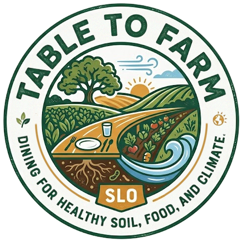
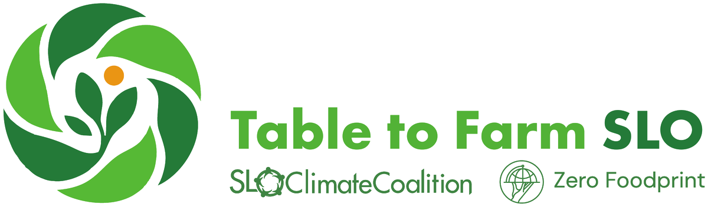

Table to Farm SLO gives diners and restaurants an easy way to help local farmers make the transition to regenerative agriculture — promoting healthy soil, healthy food, and a healthy climate. It's a triple win.
Participating businesses add a 1% optional charge to the bill, and this money is passed to our partner Zero Foodprint, a California 501(c)(3) nonprofit. Since it's a donation, customers can always choose not to pay. There's no cost to the business and no tax advantage — the business simply acts as a conduit for donations.
Food and beverage businesses join as members, and customers contribute with each purchase.
Farmers apply for grants to implement regenerative practices — compost, cover crops, and more — on their land.
Healthy soil stores carbon underground and grows food with more nutrients.
Through small donations across the food system, we can fund farm projects that draw carbon straight from the atmosphere and store it underground, creating nutrient-rich soil while sequestering greenhouse gases. The same projects increase soil health, help soil retain moisture, and increase the nutritional density of produce.
People spend over $1,000,000,000 on food and drink in establishments in SLO County in a year. If even 10% of that spending happens at participating businesses, we could raise $1,000,000 every year to support carbon-smart farming — right here at home, and without public dollars.
Join Table to Farm SLO and we'll help you get on board, train your staff, and promote your business. Learn more about the program at zerofoodprint.org.
info@TabletoFarmSLO.org →Boost soil health with a Zero Foodprint Restore Grant or Compost Connector. Farmers who supply Zero Foodprint member businesses receive preference. Your local RCD can provide technical assistance.
info@TabletoFarmSLO.org →Ask the restaurants and beverage spots you love to join Table to Farm SLO — then tell us who you asked so we can follow up.
info@TabletoFarmSLO.org →Join SLO Climate Coalition volunteers helping recruit businesses across the county — a few hours makes a real difference.
info@TabletoFarmSLO.org →
A proven partner. Zero Foodprint is a James Beard Humanitarian of the Year, was named “Most Innovative Company in Agriculture” by Fast Company, and is endorsed by CalEPA, the CA Dept. of Food & Agriculture, and the CA Air Resources Board.